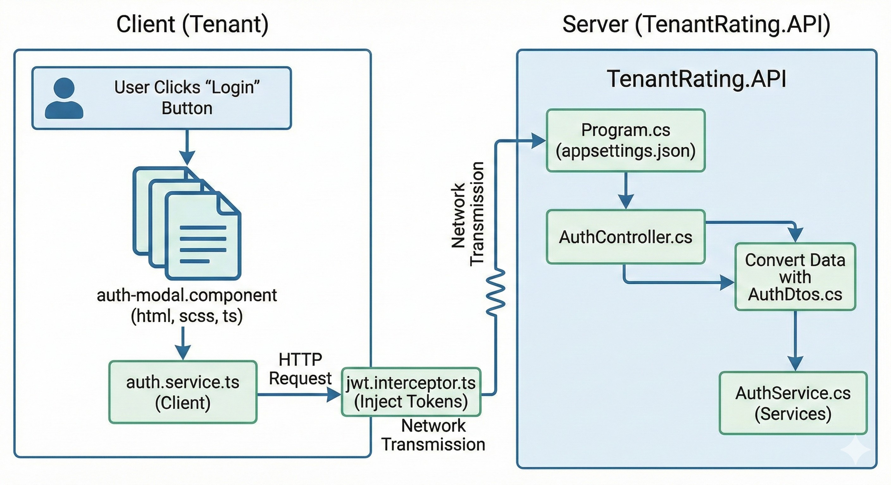
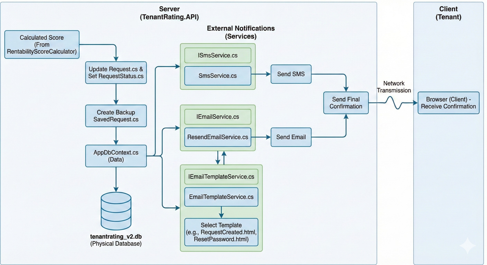

Tenant Rating - מדריך הארכיטקטורה המורחב
1. מבנה התיקיות והקבצים (Project Architecture)
צד שרת - TenantRating.API
TenantRating.API
- bin
-
Controllers
- AdminController.cs
- AuthController.cs
- LandlordsController.cs
- RequestsController.cs
-
Data
-
Entities
- Request.cs
- RequestStatus.cs
- SavedRequest.cs
- User.cs
- AppDbContext.cs
- DataSeeder.cs
-
-
db_tools
- node_modules
- db_dump.txt
- package-lock.json
- package.json
- read_db.js
-
DTOs
- AuthDtos.cs
- RequestDtos.cs
-
Logic
- RentabilityScoreCalculator.cs
-
Migrations
- 20260208221643_InitialCreate.cs
- 20260208221643_InitialCreate.Designer.cs
- AppDbContextModelSnapshot.cs
-
obj
-
Debug\net9.0
- project.assets.json
- project.nuget.cache
- TenantRating.API.csproj.nuget.dgspec.json
- TenantRating.API.csproj.nuget.g.props
- TenantRating.API.csproj.nuget.g.targets
-
-
Services
- AuthService.cs
- EmailTemplateService.cs
- IEmailService.cs
- IEmailTemplateService.cs
- IOcrService.cs
- ISmsService.cs
- OcrService.cs
- ResendEmailService.cs
- ScoringService.cs
- SmsService.cs
-
Templates
- RequestCreated.html
- ResetPassword.html
- appsettings.json
- build_output.txt
- inspect_db.py
- Program.cs
- tenantrating_v2.db
- TenantRating.API.csproj
צד לקוח - TenantRating.Client
TenantRating.Client
-
.angular\cache\19.2.19\TenantRating.Client
-
vite
- deps
- deps_ssr
- .tsbuildinfo
- angular-compiler.db
- angular-compiler.db-lock
-
-
dist\tenant-rating-client
-
browser
- assets
- chunk-J277PXRZ.js
- chunk-XERIVZKL.js
- index.html
- main-C5ZIQ3YT.js
- polyfills-B6TNHZQ6.js
- styles-M7RAQLMU.css
- 3rdpartylicenses.txt
- prerendered-routes.json
-
- node_modules
-
src
-
app
-
core
-
guards
- admin.guard.ts
- auth.guard.ts
-
services
- admin.service.ts
- auth.service.ts
- cities.service.ts
- landlord.service.ts
- request.service.ts
- jwt.interceptor.ts
-
-
features
-
admin
- admin-dashboard.component.ts
-
auth
- reset-password.component.ts
-
home
- home.component.html
- home.component.scss
- home.component.ts
-
landlord\search
- landlord-search.component.html
- landlord-search.component.scss
- landlord-search.component.ts
-
tenant\wizard
- tenant-dashboard.component.ts
-
-
shared\components
-
auth-modal
- auth-modal.component.html
- auth-modal.component.scss
- auth-modal.component.ts
-
three-cube
- three-cube.component.html
- three-cube.component.scss
- three-cube.component.ts
-
wheel
- wheel.component.ts
-
- app.component.html
- app.component.scss
- app.component.ts
- app.config.ts
-
-
assets
- favicon.svg
- lines.png
- loginRegister.jpeg
- shake.png
- index.html
- main.ts
- styles.scss
-
- angular.json
- package-lock.json
- package.json
- tsconfig.app.json
- tsconfig.json
2. מילון מושגים וטכניקות Full-Stack
מושגי יסוד: צד השרת (Backend - .NET)
| # | מושג | סיכום והסבר | מימושים וקבצים בפרויקט |
|---|---|---|---|
| 1 | Controller (בקר) | "המדריך הרשמי" של השרת. מקבל את הבקשות מצד הלקוח, מנתב אותן למקום המתאים להמשך טיפול, ומחזיר את התשובה. |
|
| 2 | Service (שירות עסקי) | "המוח" של המערכת. ה-Controllers שולחים לכאן נתונים, וה-Service מכיל את הלוגיקה העסקית והחישובים. |
|
| 3 | Model / Entity | ייצוג מחשובי של אובייקט מהעולם האמיתי המקביל לרוב לטבלה במסד הנתונים. |
|
| 4 | DTO | פילטר לתעבורת רשת. אובייקט "רזה" להעברת מידע בין הצדדים, ללא חשיפת מידע רגיש. | AuthDtos.cs, RequestDtos.cs |
| 5 | ORM / DbContext | "המתורגמן" למסד הנתונים. מאפשר לתקשר עם המסד דרך קוד ב-C# ללא כתיבת SQL. | AppDbContext.cs משמש כגשר המרכזי. |
| 6 | Migration | מנגנון לעדכון מסודר של מבנה מסד הנתונים בכל פעם שיש שינוי במודלים. | 20260208221643_InitialCreate.cs |
מושגי יסוד: צד הלקוח (Frontend - Angular)
| # | מושג | סיכום והסבר | מימושים וקבצים בפרויקט |
|---|---|---|---|
| 1 | Component (רכיב) | אבן הבניין של הממשק. מחלקת כל מסך לחתיכות קטנות עצמאיות הכוללות תבנית HTML, SCSS וקוד TS. |
|
| 2 | Service (שירות לקוח) | שירות האחראי על פעולות חוצות-קומפוננטות כמו קריאות API מול השרת (לקבלת נתונים). |
|
| 3 | Guard (שומר ניתוב) | פונקציית ביקורת שמופעלת לפני הניתוב לעמוד מסוים כדי לבדוק האם ההרשאה חוקית כרגע. | auth.guard.ts, admin.guard.ts |
| 4 | Interceptor (מיירט) | תחנת מעבר אוטומטית ש"תופסת" בקשות HTTP ומשנה אותן לפני יציאתן מחוץ ללקוח. | jwt.interceptor.ts (הזרקת Token). |
| 5 | Module / Chunk | טעינה הדרגתית (Lazy Loading) ההופכת את הקוד לנתחים שנטענים בזמן אמת ולא כגוש כבד. | chunk-J277PXRZ.js, chunk-XERIVZKL.js |
2. עקרונות וטכניקות Full-Stack (הארכיטקטורה שמאחורי הקלעים)
| # | עקרון / דפוס (Architecture Concept) | הסבר ולוגיקה (Logic & Explanation) | מימוש ודוגמאות (Implementation) |
|---|---|---|---|
| 1 | Thin Controller / Fat Service (בקר רזה / שירות שמן) |
ה-Controller לא מבצע לוגיקה עסקית אלא רק מתווך. ה-Service מבצע את העבודה האמיתית, החישובים והלוגיקה. |
|
| 2 | Component-Service Pattern (דפוס רכיב-שירות) |
ה-Component לא מדבר ישירות עם ה-Network ולא מכיל לוגיקה מורכבת. הכל עובר דרך שירותים (Services). |
|
| 3 | Dependency Injection & Abstraction (הזרקת תלות והפשטה) |
עבודה מול Interface ולא מול מימוש ישיר (DIP מתוך SOLID). מאפשר החלפת ספקים בקלות. |
|
| 4 | Pipeline Pattern (דפוס צינור נתונים) |
כל בקשה עוברת רצף קבוע: HTTP → Controller → Service → Logic → Data → Response. |
Login: Client → Ctrl → Svc → DB → Svc → Ctrl
→ Client
Create Request: Client → Ctrl → OCR → Scoring → DB → Msg → Client |
| 5 | DTO Boundary (גבול אובייקטי העברת נתונים) |
שימוש ב-Data Transfer Objects כ-Anti-Corruption Layer להגנה על מבנה ה-DB ומניעת חשיפת מידע רגיש. | AuthDtos.cs, RequestDtos.cs |
| 6 | Gatekeeper Pattern (דפוס שומר הסף) |
שכבת בדיקה והרשאות קריטית שמתבצעת לפני גישה למידע או ביצוע פעולה. |
Client: auth.guard.ts, admin.guard.ts Server: JWT, Interceptors. |
| 7 | Orchestrator Pattern (דפוס המנצח/מתזמר) |
גורם אחד מרכזי שמנהל, מתזמן ומסנכרן את כל שירותי העזר מבלי לבצע הכל בעצמו. |
ה-ScoringService מפעיל: OCR → אלגוריתם דירוג → שמירה ב-DB → שליחת הודעות. |
| 8 | Cross Cutting Concerns (נושאים חוצי מערכת) |
פונקציונליות שחוצה את כל המערכת (Logging, Security, DB Access) ומוזרקת כשירותים גלובליים. | JWT Interceptor, DbContext, Email/SMS Services. |
| 9 | Build Artifact Architecture (ארכיטקטורת תוצרי בניה) |
תהליך קומפילציה שבו קוד המקור הופך לתוצרי ריצה (Artifacts) שלא מורצים ישירות. |
Client: angular.json →
dist Server: csproj → bin/obj. |
🧠 לסיכום: Clean Architecture (גרסה פרקטית)
המערכת מורכבת מ-3 שכבות ברורות: Presentation (Angular),
Application (Services), ו-Infrastructure (DbContext / External
APIs).
3. סיפור הזרימה: המסע השלם של בקשה במערכת
1. כניסת המשתמש וטעינת הלקוח (Client)
הכל מתחיל בעולם של TenantRating.Client. כאשר משתמש נכנס למערכת, הדפדפן טוען את קובץ ה-index.html (שנמצא תחת src). מאחורי הקלעים, Angular מתעורר דרך ה-main.ts ומשתמש בהגדרות מ-app.config.ts כדי לאתחל את המסגרת העיקרית - מרכיבי ה-app.component.html, ה-app.component.scss והלוגיקה ב-app.component.ts.

2. תצוגת מסך הבית ועיצוב (Client)
הדפדפן מציג למשתמש את ה-home.component.html ומפעיל את ה-home.component.ts. העיצוב הגלובלי נשאב מ-styles.scss יחד עם תמונות ואייקונים מה-assets: כגון הרקע lines.png, הסמליל favicon.svg, ותמונת ההתחברות loginRegister.jpeg. זהו ממשק מרהיב המפעיל גם את עיצוב ה- home.component.scss ומשלב אלמנטים תלת מימדיים של three-cube.component.ts, three-cube.component.html ו-three-cube.component.scss, ואנימציות מ-wheel.component.ts כולל תמונה לדף הבית: shake.jpg.

הערה על מאחורי הקלעים: חוויה חלקה זו התאפשרה רק בגלל תהליך ה-Build הקפדני שקרה קודם לכן במכונת המפתח על תיקיית הלקוח. בעזרת angular.json, package.json, package-lock.json ו-tsconfig.json (ותצורתו באפליקציה tsconfig.app.json), קבצי הלקוח קומפלו דרך מערכת ה-.angular\cache שם בצעו עבודתם .tsbuildinfo, angular-compiler.db, כלי פיתוח פנימים, vite, deps ותלויות ה-node_modules לתיקיית הסיום dist\tenant-rating-client\browser. תוצר זה ארז את חוקי הבניה, והפיק קבצים מוכנים לדפדפן כמו main-C5ZIQ3YT.js, הפוליפילז polyfills-B6TNHZQ6.js, התצורה הכללית של אבזור המערכת, קובץ ה-3rdpartylicenses.txt ואוסף החתיכות הרזות chunk-J277PXRZ.js ו-chunk-XERIVZKL.js שעיצבו לבסוף את קובץ ה-styles-M7RAQLMU.css.
3. ניסיון אימות ראשון (Client ל-Server)
המשתמש (נניח שוכר) לוחץ על כפתור התחברות. קופצת חלונית ה-auth-modal.component.html (הנתמכת על ידי קובץ העיצוב שלה auth-modal.component.scss והקוד שלה auth-modal.component.ts). כשהוא מזין את פרטיו ולוחץ שלח, הקריאה מועברת ל-auth.service.ts בצד הלקוח. השירות מייצר בקשת HTTP. עוד לפני שהבקשה עוזבת לחלוטין את הדפדפן להמשך הדרך, ה-jwt.interceptor.ts מוודא הזרקת אסימוני אבטחה במידה וישנם לשאר מסלולי ה-prerendered-routes.json.
כעת שיגרנו את הבקשה לרשת והיא נוחתת בעולם של השרת - אל תוך TenantRating.API. השרת מתעורר דרך ה-Program.cs תוך שאיבת הגדרות סביבה מ-appsettings.json. ה-AuthController.cs מתיקיית ה-Controllers הוא זה שלוכד את בקשת ההתחברות. הבקר הופך את המידע הנכנס לאובייקט מתאים מקובץ ה-AuthDtos.cs, ומעביר את המשימה הלאה אל המוח – אל ה-AuthService.cs המצוי בתיקיית ה-Services.
4. עבודה מול מסד הנתונים והחזרת תשובה (Server ל-Client)
ה-AuthService.cs צריך לבדוק אם המשתמש קיים. הוא פונה לשכבת הנתונים (ה-Data) ומתקשר עם מסד הנתונים הפיזי, הגיבוי השמור tenantrating_v2.db. גישה זו נעשית דרך ה-AppDbContext.cs. ההשוואה מתבצעת מול נתוני הישות השמורים תחת המודל User.cs. לשמחתנו, המשתמש נמצא ותואם! השרת מרכיב תשובה חיובית עטופה כ-DTO, משגר אותה בחזרה דרך הבקר, והיא טסה אל מעבר לרשת חזרה לדפדפן של הלקוח.

5. ניתוב המשתמש לאזור האישי (Client)
הדפדפן וקומפוננטת auth.service.ts מקבלים את האישור החיובי.
כעת, שומר הניתוב ב-auth.guard.ts נותן אור ירוק לניתוב, והלקוח
מחליף את עמוד הבית בעמוד האזור האישי: ה-tenant-dashboard.component.ts נטען. הממשק החדש למשתמש הסטטוסים
מבוסס על שירות בדיקות מותאם - request.service.ts.
(חריג: אם מדובר היה במנהל מערכת, ה-admin.guard.ts
היה מתיר גישה ל-admin-dashboard.component.ts שמקבל נתונים
מ-admin.service.ts, ואילו לשוכרים מחפשים יש את אזור
ה-landlord-search.component.html מלווה בעיצוב landlord-search.component.scss, קוד landlord-search.component.ts עם שימוש בשירותי עזר landlord.service.ts וחיפוש בערים מול cities.service.ts. או אפילו עמודי איפוס סיסמא רגילים כ-
reset-password.component.ts).

6. יצירת בקשה חדשה והעברה לשרת (Client ל-Server)
השוכר המחובר מעוניין לפתוח פרופיל תיוג חדש. הוא ממלא פרטים ומעלה מסמכים. הלקוח אורז זאת ויורה בקשת HTTP חדשה אל השרת. הפעם הבקשה נוחתת ב-RequestsController.cs (או אם היה זה בעל בית ל-LandlordsController.cs או למנהלי האתר ב-AdminController.cs).
שרת ה-.NET תופס פיקוד: המידע (שב-RequestDtos.cs) מחולק למקצוענים - על מנת לקרוא נתונים אוטומטית ממסמכי הזהות, מופעל ה-IOcrService.cs (והמימוש בפועל שבו OcrService.cs). לאחר התהליך המרתק הזה הנתונים החדשים עוברים אל שירות הדירוג הראשי ה-ScoringService.cs. זה האחרון מפעיל את האלגוריתם המרכזי והמורכב - מחלקת ה-RentabilityScoreCalculator.cs היישר מתיקיית ה-Logic כדי להחליט על ציון השוכר הסופי.

7. שמירה במערכת והתקשרויות חוץ (פעולות Server עוקבות)
עם הציון המוכן, השרת מחזיר את שלב השמירה והתיווך לישות Request.cs ומעדכן את המצב במערכו לפי RequestStatus.cs ובגיבוי SavedRequest.cs. שוב הכול מגובה דרך ה-AppDbContext.cs אל מסד הנתונים הראשי.
לסיום סיומת של תהליך, השרת יוצא ומעדכן גורמים בעזרת שרתים חיצונים – הוא מפעיל ממשקי הודעות ISmsService.cs ו-SmsService.cs. במקביל הוא מזמן את נציגי המיילים - IEmailService.cs ו-ResendEmailService.cs ששואלים את האחראים לעיצוב EmailTemplateService.cs ו-IEmailTemplateService.cs איזה תוכן טקסטואלי נחמד לשגר מה-Templates (כמו תבנית RequestCreated.html למייל יצירה או לחלופי חלופין תבנית הפלאפון ResetPassword.html). עם גמר העבודות, השרת משגר אישור סופי וקליל אל השוכר הממתין עדיין בהתרגשות, חזרה בדפדפן הלקוח.
8. מאחורי הקלעים בעולם השרת (כלי פיתוח ותחזוקה)
ובזמן שאנחנו נרגעים, באפליקציה בולעים אוויר: יש כלי עזר מיוחדים שדואגים שמסד הנתונים לעולם לא יקרוס
וישתנה בצורה יעילה: תיקיית ה-db_tools המבוססת על סביבה של
Node.js, ולכן מחזיקה בעצמה package.json ו-package-lock.json ותלויות node_modules משלה. משם נשלפים סקריפטים כמו read_db.js מול ה- db_dump.txt שמוכן למקרה חירום. קובץ פייתון ייחודי תחת inspect_db.py מאפשר ניתוח אנליטי מהיר במקרים מורכבים במיוחד.
כמו בלקוח - כדאי לזכור ששרת עצום זה נוצר תחילה באמצעות ה-TenantRating.API.csproj שדאג בקימפולו לתוצרי ביניים בתיקיות
ה-obj התצורה ו-bin
(כגון Debug\net9.0 למיניהן - project.assets.json, TenantRating.API.csproj.nuget.dgspec.json, TenantRating.API.csproj.nuget.g.props, TenantRating.API.csproj.nuget.g.targets, ו-project.nuget.cache), כשמנגד עומדים המיגרציות כמעקב תדיר לעבר:
ה- 20260208221643_InitialCreate.cs, 20260208221643_InitialCreate.Designer.cs והגיבוי הכרונולוגי של
ה-AppDbContextModelSnapshot.cs. לאלה ולסופים הוסיפו תמיד כלי
תחזוקה כמו אתחול נתונים ראשוניים בעזרת עבודת כפיים ב-DataSeeder.cs, או קריאת נתוני בניית ריצה ב-build_output.txt.
הופק ע"י Antigravity עבור פרויקט Tenant Rating | כולל 100+ מרכיבי הארכיטקטורה.